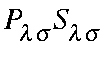

MULLIK
A full Mulliken Population analysis [41,42] is to
be done on the final RHF
wavefunction. This involves the following steps:
- 1.
- The eigenvector matrix is divided by the square root
of the overlap matrix, S.
- 2.
- The Coulson-type density matrix, P, is formed.
- 3.
- The overlap population is formed from
.
- 4.
- Half the off-diagonals are added onto the diagonals.